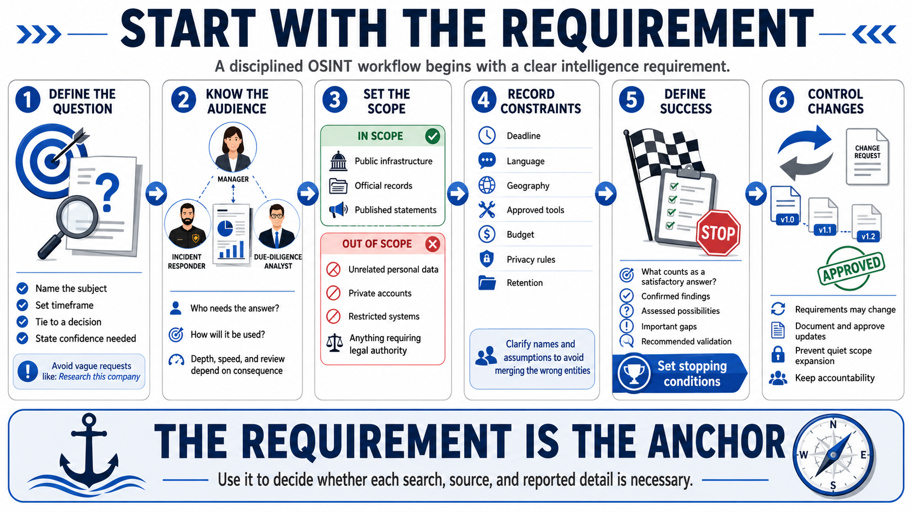

Define the Intelligence Requirement
Connecting to LMS... Progress: in progress

Narration
Every OSINT workflow should start with a clear intelligence requirement: the question the work must answer for a named decision or operational need. A vague request such as research this company invites uncontrolled searching. A useful requirement identifies the subject, timeframe, decision, and required level of confidence.
Identify who needs the answer and how it will be used. An incident responder may need a rapid assessment within an hour. A due-diligence team may accept a longer timeline but require documented primary sources. Audience and consequence determine depth, format, review, and escalation.
Define scope explicitly. In-scope elements may include public infrastructure, official records, or published statements within a date range. Out-of-scope elements may include personal data unrelated to the purpose, private accounts, restricted systems, or activity requiring legal authority that the team does not possess.
Record constraints such as deadline, language, geography, approved tools, budget, privacy rules, and retention. State assumptions and terms that could be ambiguous. A clear definition of the entity prevents records from different people or organizations with similar names from being merged.
Specify what a satisfactory answer looks like. This may include confirmed findings, assessed possibilities, important gaps, and recommended validation. Set stopping conditions so the team can conclude when the question has been answered to the required level or when available public information is insufficient.
Requirements can change as evidence appears, but changes should be documented and approved. This preserves accountability and prevents quiet expansion into unrelated collection. The requirement remains the anchor for deciding whether each search, source, and reported detail is necessary.